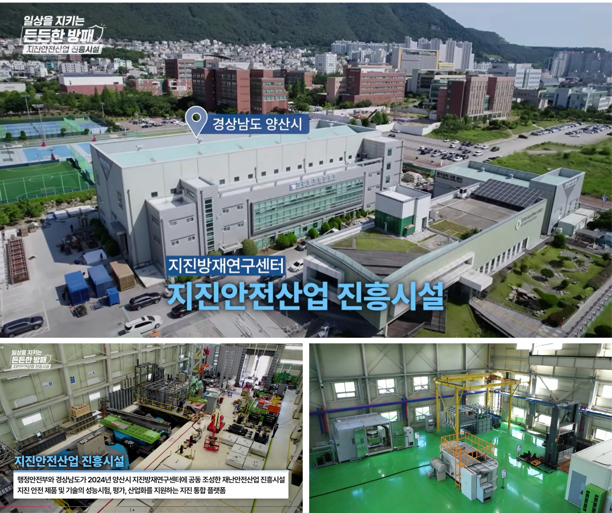
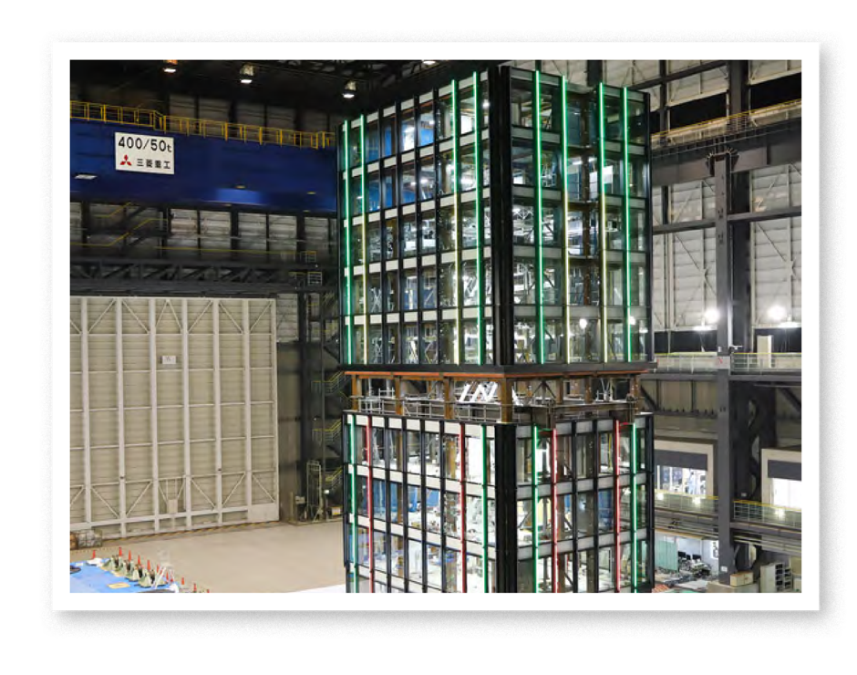
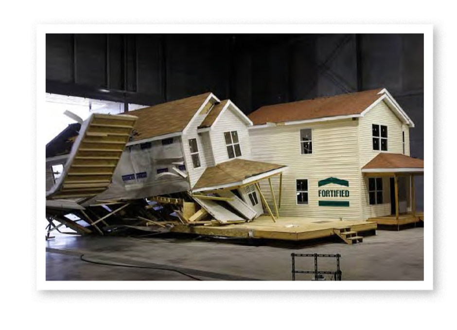
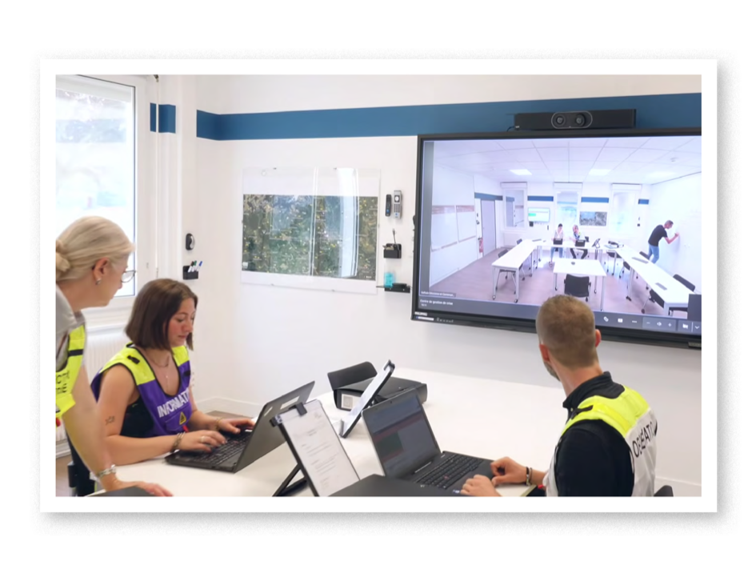

재난안전산업 진흥법에 따라 조성되는 ‘재난안전산업 진흥시설’이 전국으로 확산되고 있다. 침수, 지진, 폭염 등 재난 유형별로 특화된 시험·인증 기반을 지역에 구축해, 기업의 기술개발부터 판로 개척까지 지원하는 방식이다. 해외 주요국도 저마다의 방식으로 재난안전 기술을 실증하는 대형 시설을 운영해 왔다. 일본, 미국, 프랑스의 사례를 통해 국내 진흥시설이 나아갈 방향을 짚어본다.

재난 유형마다 하나씩, 전국에 들어서는 진흥시설
국내 재난안전산업 진흥시설은 특정 재난 유형에 특화된 시험·평가·인증 인프라를 현장 실증부터 사업화까지 한 곳에 구축하는 사업이다. 2023년 침수를 시작으로 지진, 화재, 급경사지·산사태, 폭염까지 재난 유형별 특화 재난안전산업 진흥시설이 순차적으로 조성되고 있다.
| 특화분야 | 위치·주관기관 | 사업기간 | 핵심 내용 |
|---|---|---|---|
| 침수 | 전북 군산 전북테크노파크 | 2023~2026 | 침수환경 모사 피로시험 장비, 차수제품 평가시스템 등 10종 장비 구축 |
| 지진 | 경남 양산 부산대 지진방재연구센터 | 2024~2026 | 이중바닥 시험기, 고속·대변형 층간변위모사 시험기 등 9종 장비 구축 |
| 화재 | 충남 홍성 한국화학융합시험연구원 | 2024~2026 | 열방출량 측정장비, 스프링클러 소화설비 성능시험 장비 등 15종 장비 구축 |
| 급경사지·산사태 | 부산 부산테크노파크 | 2025~2027 | 지표변위계 선형식 성능검사 장비, 급경사지·산사태 모의실험 장비 등 11종 장비 구축 |
| 폭염 | 울산 울산테크노파크 | 2026~2028 | 폭염 장기 내구성 환경 실증 시스템, 인체 영향 실증용 마네킹 평가 시스템 등 11종 장비 |
일본,건물을 실제로 무너뜨려 확인한다
일본 국립방재과학기술연구소가 효고현 미키시에서 운영하는 E-Defense는 세계 최대급인 20m×15m 진동대를 갖춘 실물 크기 건물 파괴실험 시설이다. 실제 건물을 통째로 올려 지진 하중을 가하고, 붕괴에 이르는 전 과정을 데이터로 남긴다. 2026년 2월부터 3월까지는 의료시설과 사무실, 주거공간을 재현해 지진 시 실내 가구·설비의 전도 피해를 살펴보고, AI로 피해 정도를 즉시 평가하는 기술을 공개 실험했다. 이 실험은 과거 지진 피해 분석에서 가구 전도가 부상 원인의 34%를 차지한다는 점에 착안한 것이다.

미국보험업계가 재난을 실물로 재현한다
사우스캐롤라이나주 리치버그의 IBHS 연구센터는 70여 개 보험사가 공동 출자해 세운 실증 시설이다. 90에이커(약 364,217㎡) 부지에 6층 높이, 145×145피트(약 44×44m) 규모의 실험동을 갖추고, 105개의 대형 팬으로 시속 130마일에 이르는 허리케인급 바람을 재현한다. 2026년에는 실제 주택 13채를 태워 시속 30~55마일의 바람 속에서 산불이 주택으로 번지는 과정을 검증했고, 그 결과는 캘리포니아의 화재 안전 기준 강화로 이어졌다. 소방관 안전과 화재 자체를 연구하는 UL FSRI(글로벌 안전 인증 기관 UL 산하의 화재안전연구소)는 1894년부터 이어진 UL의 안전과학 전통 위에 2013년 설립돼, 배터리 화재와 산불-도시 경계지역 화재 등을 실증 연구하고 있다. 보험업계와 화재안전 업계가 각자의 위험 관리 필요에 따라 실증 인프라를 직접 세운 것이 특징이다.

프랑스재난 이후의 대응력을 훈련한다
프랑스 CNPP*가 베르농(Vernon)에서 운영하는 위기관리센터는 2025년 7월 문을 연 신생 시설이다. 운영통제실, 의사결정·소통실, 미디어 트레이닝실, 진행조정실 등 네 개의 모듈형 공간으로 구성돼 산업사고, 기후재해, 사이버공격, 테러 등 다양한 위기 시나리오를 실감 나게 재현한다. 정부와 지자체, 긴급 서비스, 민간기업이 실제로 이 센터를 찾아 위기대응팀의 의사결정 속도와 소통 능력을 훈련한다. 시설과 장비를 검증하는 일본·미국의 사례와 달리, 프랑스의 위기관리센터에서는 재난이 발생한 이후 조직의 대응력을 실증하는 데 초점을 맞췄다.
*CNPP: 화재, 보안, 환경, 사이버 보안 등의 분야를 다루는 민간 위험 예방 및 관리 전문 기관. 1956년 프랑스 보험사 연합 주도로 설립되었으며, 1961년 공익 공인(utilité publique) 기관으로 인정받았다.

네 나라, 네 가지 방식
국내 진흥시설이 재난 유형별로 시험·인증 인프라를 순차적으로 넓혀가는 단계라면 이번에 소개한 유사한 기관·시설은 각기 다른 특징을 보여준다. 일본은 파괴 자체를 실증하고, 미국은 업계가 스스로 재현 시설을 세우며, 프랑스는 대응 이후의 조직력을 훈련하고 있다. 접근 방식은 다르지만 공통점은 뚜렷하다. 재난안전 기술은 실제 상황과 가장 가까운 조건에서 검증될 때 비로소 신뢰를 얻는다는 점이다. 지역별로 흩어진 국내 진흥시설들이 서로 연계되고, 실증을 넘어 인증과 해외 진출까지 이어지는 생태계로 자라날 수 있을지가 다음 과제로 남는다.